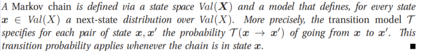
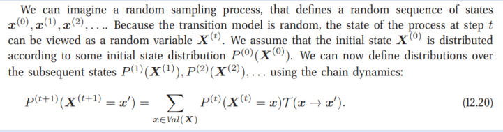
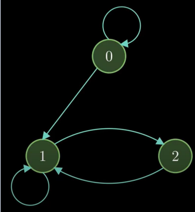
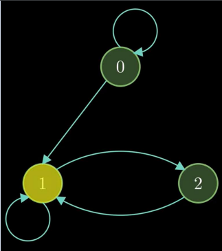
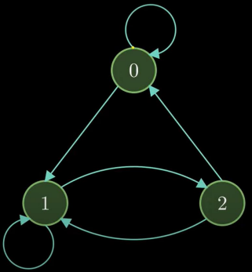
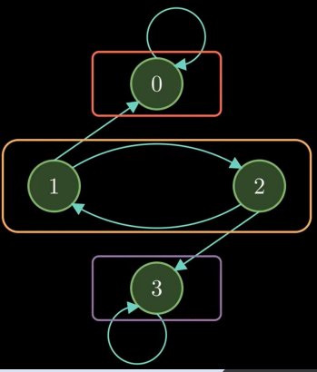

- Statistics
- Biology
- Economics
- Physics
- Machine Learning


Here’s a youtube playlist to better help you understand the concept of Markov Chains with a great example.
click here
If arrow (transition) from State A to State B then
there is non-zero probability of transition
Sum of all outgoing probabilities is 1
Ex: Random walk in Markov Chain starting from State 0
• Possible Transitions from State 0: 0-0, 0-1
• Possible Transitions from State 1: 1-2, 1-1
• Possible Transitions from State 2: 2-1
• We can come to state 0 in some random walk
where we are looping around 0 i.e., 0-0
• But we cannot come back to State 0 in some
random walk after leaving State 0
• Transient State: The state where probability of
coming back to original state is less than 1

Ex: Random walk in Markov Chain starting from State 1
• Possible Transitions from State 1: 1-2, 1-1
• Possible Transitions from State 2: 2-1
• So, in any random walk, we are bound to come back
to State 1
• Recurrent State: The state where probability of
coming back to original state is 1

Ex: Random walk in Markov Chain starting from State 2
• Possible Transitions from State 2: 2-1
• Possible Transitions from State 1: 1-2, 1-1
• So, in any random walk, we are bound to come back to State 2
• Recurrent State: The state where probability of coming back to original state is 1
• So, both State 1 and State 2 are Recurrent States
• There is no incoming arrow to State 0, so it's not recurrent.
• In some states where it cannot be reached again from others, these are called the Reducible Markov Chain.
If we add an arrow from State2-State 0, then every state is reachable from every other state.
Irreducible Chain: The Markov chain where all states are recurrent, and we can go to any states from any state.

Communicating Classes
Start State 0
Possible Transitions: 0-0
Thus, we can’t go to any other state
Start State 3
Possible Transitions: 3-3
Thus, we can’t go to any other state
Start State 1
Possible Transitions: 1-2, 1-0
Thus, we can go to State 2 and Come Back to State 1
But if we go to State 1-0, then we can't come back.
Start State 2
Possible Transitions: 2-1, 2-3
Thus, we can go to State 1 and Come Back to State 2
But if we go to State 2-3, then we can't come back.
Thus, State 0, State 3 are Self-Contained States.
Thus, State 0, State 3 are Self-Contained States.
According to state types, they are classified as
Communicating Classes.
3 classes are mentioned in rectangles.
Between any of these classes we can go from
other.
